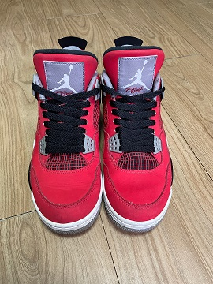

right
오른쪽에 배치
display 속성은 요소의 종류를 변경하는 것으로 float 속성과 별개, 띄우는 순간 블록,인라인의 의미가 없어진다.
margin속성으로 p태그 요소와 여백확보
 jordan retro 4 toro bravo jordan retro 4 toro bravo jordan retro 4 toro bravo jordan retro 4 toro bravo jordan retro 4 toro bravo jordan retro 4 toro bravo jordan retro 4 toro bravo jordan retro 4 toro bravo jordan retro 4 toro bravo jordan retro 4 toro bravo jordan retro 4 toro bravo jordan retro 4 toro bravo jordan retro 4 toro bravo jordan retro 4 toro bravo jordan retro 4 toro bravo jordan retro 4 toro bravo jordan retro 4 toro bravo jordan retro 4 toro bravo jordan retro 4 toro bravo jordan retro 4 toro bravo jordan retro 4 toro bravo jordan retro 4 toro bravo jordan retro 4 toro bravo jordan retro 4 toro bravo jordan retro 4 toro bravo jordan retro 4 toro bravo jordan retro 4 toro bravo jordan retro 4 toro bravo jordan retro 4 toro bravo jordan retro 4 toro bravo jordan retro 4 toro bravo jordan retro 4 toro bravo jordan retro 4 toro bravo jordan retro 4 toro bravo jordan retro 4 toro bravo jordan retro 4 toro bravo jordan retro 4 toro bravo jordan retro 4 toro bravo jordan retro 4 toro bravo jordan retro 4 toro bravo jordan retro 4 toro bravo jordan retro 4 toro bravo jordan retro 4 toro bravo jordan retro 4 toro bravo jordan retro 4 toro bravo jordan retro 4 toro bravo jordan retro 4 toro bravo jordan retro 4 toro bravo jordan retro 4 toro bravo jordan retro 4 toro bravo jordan retro 4 toro bravo jordan retro 4 toro bravo jordan retro 4 toro bravo jordan retro 4 toro bravo jordan retro 4 toro bravo jordan retro 4 toro bravo jordan retro 4 toro bravo jordan retro 4 toro bravo jordan retro 4 toro bravo jordan retro 4 toro bravo jordan retro 4 toro bravo jordan retro 4 toro bravo jordan retro 4 toro bravo jordan retro 4 toro bravo jordan retro 4 toro bravo jordan retro 4 toro bravo jordan retro 4 toro bravo jordan retro 4 toro bravo jordan retro 4 toro bravo jordan retro 4 toro bravo jordan retro 4 toro bravo jordan retro 4 toro bravo jordan retro 4 toro bravo jordan retro 4 toro bravo jordan retro 4 toro bravo jordan retro 4 toro bravo jordan retro 4 toro bravo jordan retro 4 toro bravo jordan retro 4 toro bravo jordan retro 4 toro bravo jordan retro 4 toro bravo jordan retro 4 toro bravo jordan retro 4 toro bravo jordan retro 4 toro bravo jordan retro 4 toro bravo jordan retro 4 toro bravo jordan retro 4 toro bravo jordan retro 4 toro bravo jordan retro 4 toro bravo jordan retro 4 toro bravo jordan retro 4 toro bravo jordan retro 4 toro bravo jordan retro 4 toro bravo jordan retro 4 toro bravo jordan retro 4 toro bravo jordan retro 4 toro bravo jordan retro 4 toro bravo jordan retro 4 toro bravo jordan retro 4 toro bravo